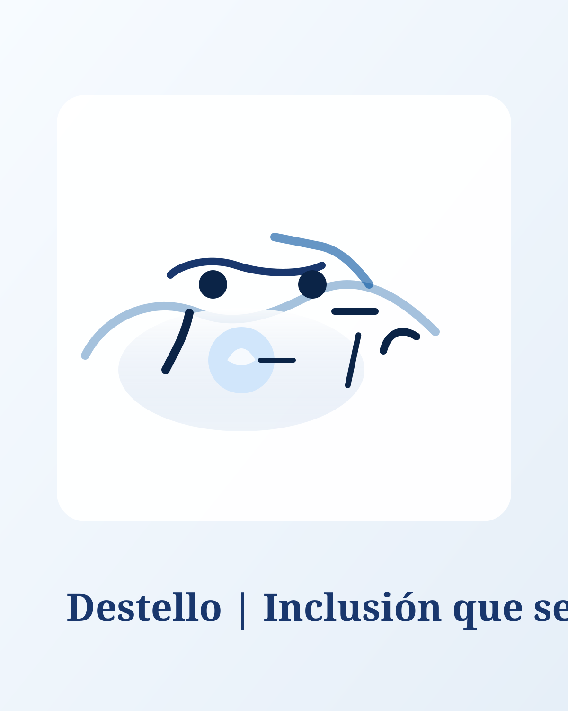
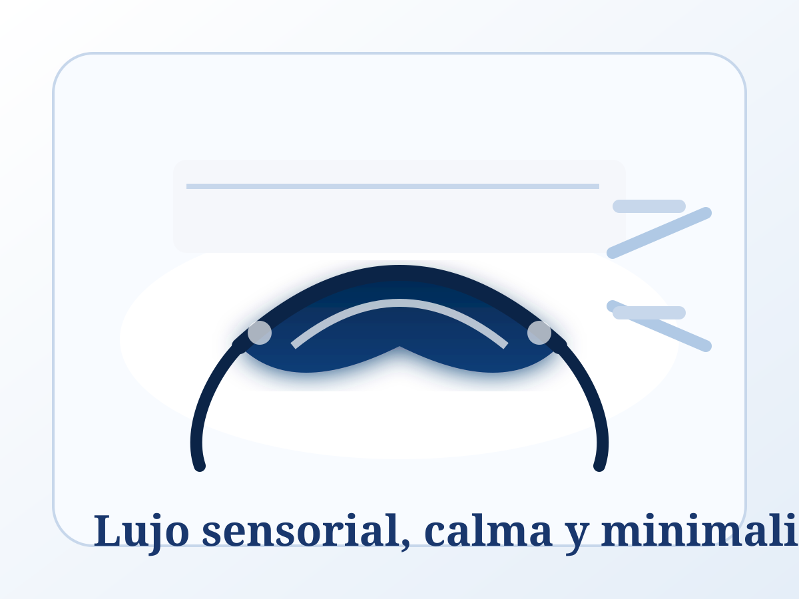

Gastronomía · Empatía · Madrid
«Lo esencial es invisible a los ojos»
Sobre Nosotros
En Destello, la excelencia culinaria se encuentra con la inclusión. No adaptamos espacios una vez construidos, los diseñamos desde cero pensando en la diversidad humana como punto de partida.
Aquí, una persona ciega no requiere asistencia especial porque el entorno ya le pertenece. La verdadera inclusión no es el asistencialismo, es la convivencia natural, las risas compartidas y el diseño inteligente al servicio de todos los sentidos.

Arquitectura del espacio
Aquí, cada detalle ha sido diseñado para la autonomía y el confort. Porque la verdadera inclusión no es una opción, es nuestro estándar de calidad:
Nuestro equipo está formado por la ONCE para ofrecerte el mejor acompañamiento, desde la puerta hasta la sobremesa.
Disfruta de una sala insonorizada donde el ruido exterior desaparece, permitiendo que los aromas y sabores sean los protagonistas.
Disponemos de menús en Braille, tipografías de alta legibilidad y reproductores de voz individuales en cada mesa.
Caminos podotáctiles te guían con total seguridad, y cada mesa cuenta con ganchos discretos de diseño para tu bastón.
Utilizamos vajilla amplia con bordes táctiles y ubicamos cada ingrediente siguiendo las manecillas del reloj para tu orientación.
Si vienes con tu perro guía, reservamos un espacio amplio y protegido con bebedero propio para que él también esté cómodo.
Mucho más que una cena
Para quienes ven, Destello ofrece una oportunidad introspectiva única. Al sentarte a la mesa, encontrarás un delicado antifaz de seda reposando junto a tus cubiertos.
Te animamos a ponértelo y sumergirte en un viaje donde el aroma, la textura de la comida y el sonido se convierten en los verdaderos protagonistas. Es una invitación al prestigio sensorial y a potenciar tu empatía.
Nota: El uso del antifaz es una recomendación para vivir la experiencia completa, pero no es obligatorio. Tu comodidad es nuestra prioridad.

Tradición y modernidad
Nuestra Historia
Destello nació de una experiencia personal profunda. Sus fundadores comprendieron que la exclusión en la alta gastronomía a menudo es invisible para quienes no la padecen.
Tras años de investigación y colaboración estrecha con expertos en accesibilidad visual, nació un espacio pionero en Madrid que busca establecer un nuevo estándar en la hostelería europea.
Nuestra razón de ser trasciende los fogones. Creemos en una inclusión activa y tangible, por lo que Destello colabora directamente con la ONCE.
Cada plato que disfrutas incluye una aportación que destinamos a esta organización. Al elegirnos, no solo estás disfrutando de una gran gastronomía, sino apoyando proyectos que cambian la vida de miles de personas.
Consulta nuestro informe de impacto anualTe esperamos
Reserva Telefónica (Vía preferente)
91 234 45 56📍 Calle de José Abascal, 28 (Cerca Museo Sorolla), Madrid.
* Proyecto universitario. Fotografías de simulación grabadas en el restaurante Camino de Madrid.
Aportación solidaria a la ONCE en cada menú.